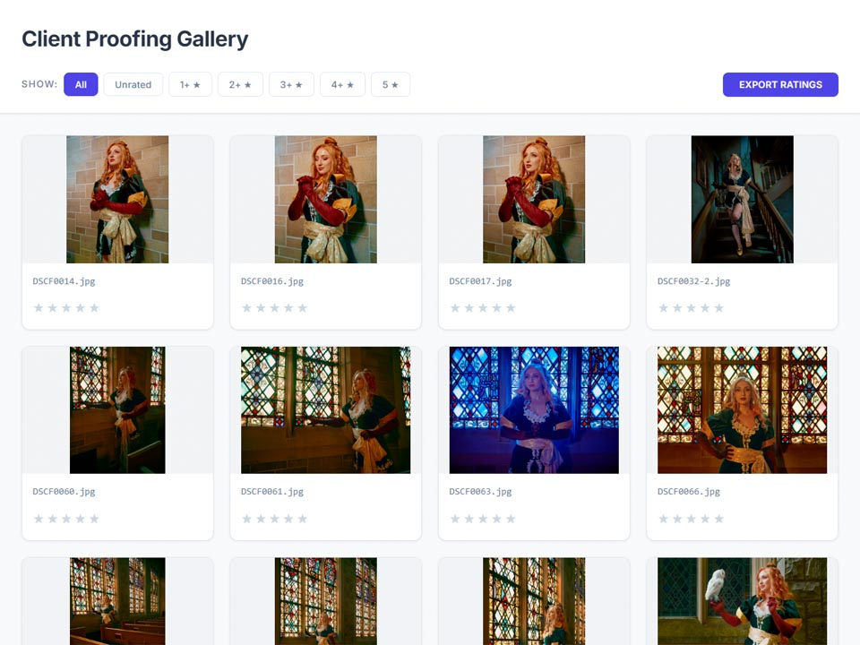
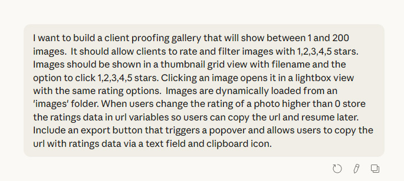
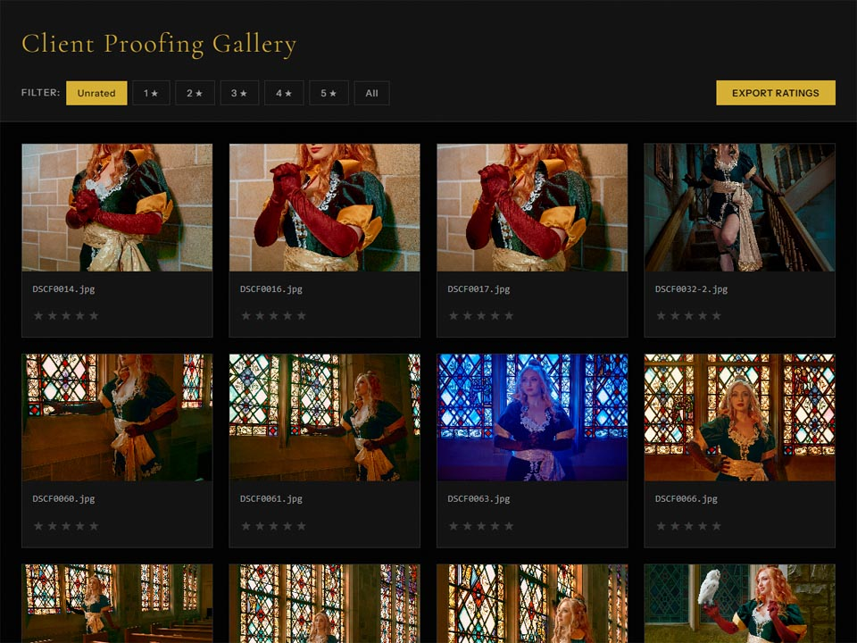
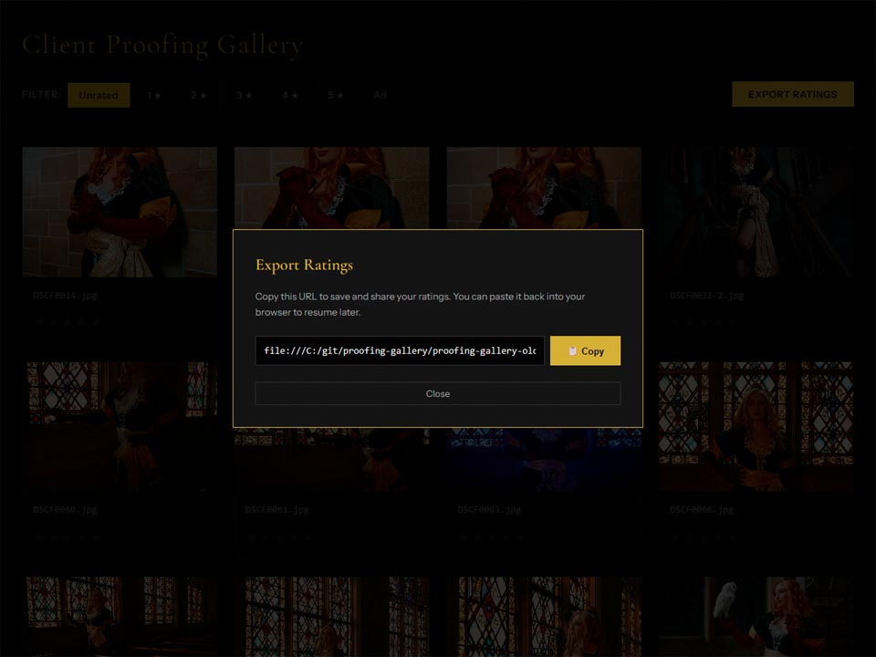
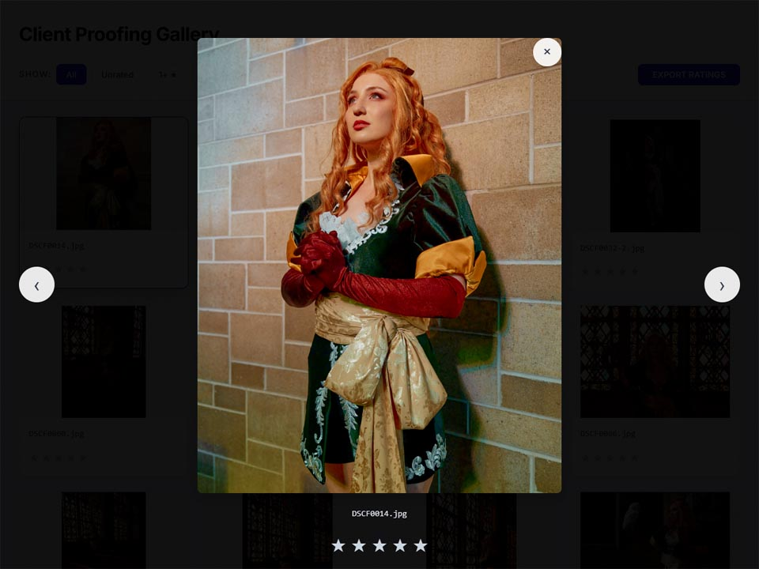
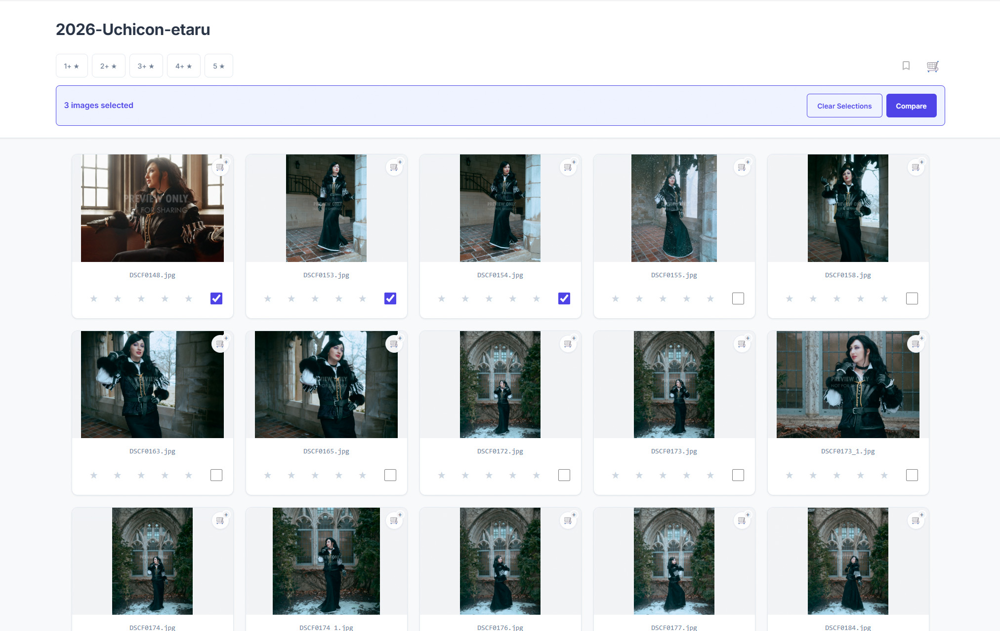
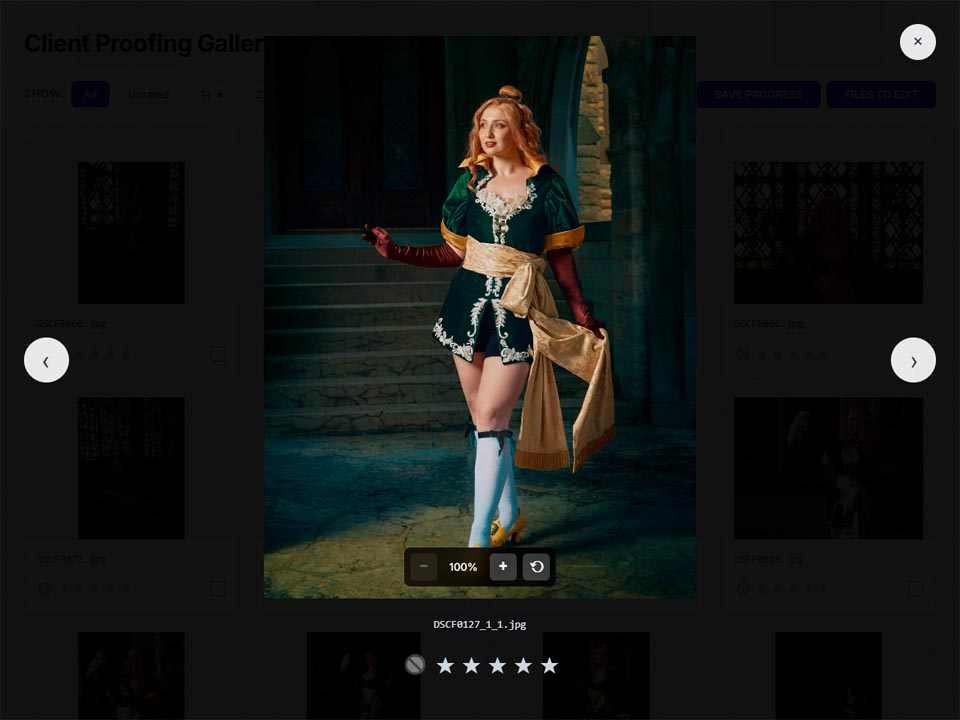
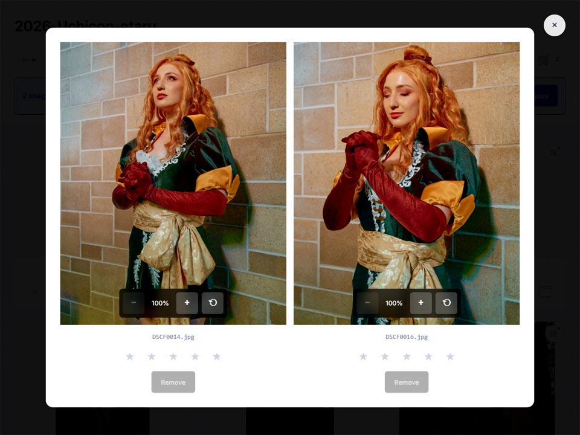
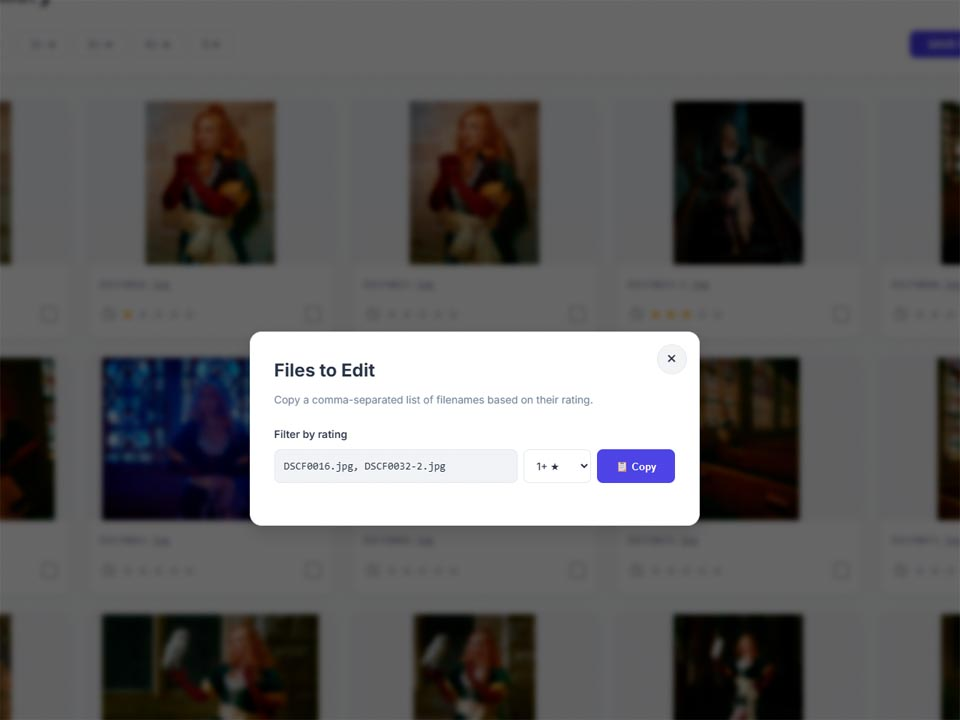
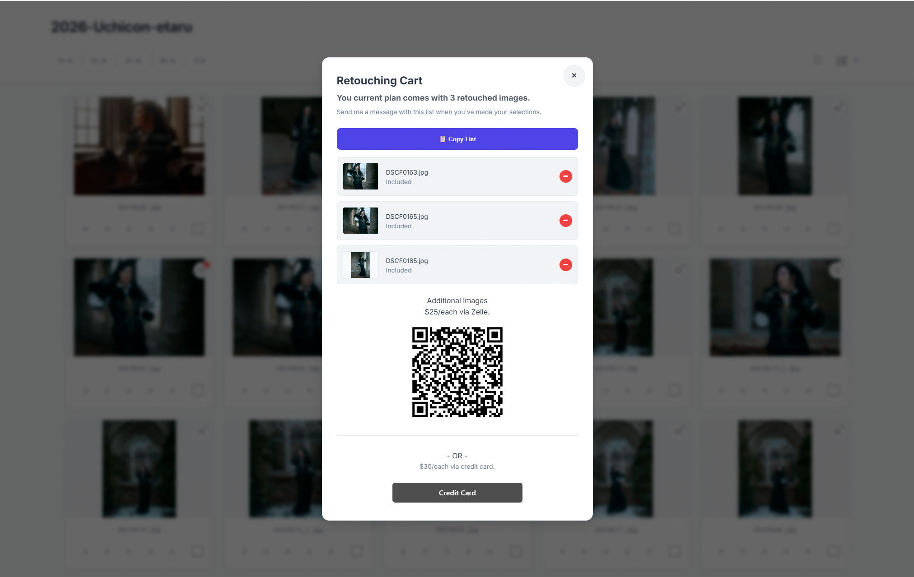

<!DOCTYPE html><html lang="en" id="top"><head><meta charset="UTF-8"/>
<meta name="viewport" content="width=device-width, initial-scale=1.0">
<meta http-equiv="X-UA-Compatible" content="IE=edge"/><title>Chris Norton: Designer</title><link rel="preconnect" href="https://fonts.googleapis.com">
<link rel="preconnect" href="https://fonts.gstatic.com" crossorigin><!--link(href='https://fonts.googleapis.com/css2?family=Open+Sans:wght@400;700&family=Source+Sans+3&display=swap', rel='stylesheet')--><link href="https://fonts.googleapis.com/css2?family=Arimo:ital,wght@0,400..700;1,400..700&amp;family=Source+Sans+3&amp;display=swap&amp;display=swap" rel="stylesheet"/><link rel="stylesheet" href="https://cdnjs.cloudflare.com/ajax/libs/font-awesome/6.5.0/css/all.min.css"/><link rel="stylesheet" href="styles/styles-2025.css"/><script src="js/polyfill.min.js"></script></head></html><body><style><!--include styles/proofing-gallery.css--></style><div class="wrapper bg-light-1" data-title="Overview"><div class="page"><header class="ds-nav" id="mainNav" data-variant="light" data-sticky="true" role="banner"><div class="ds-nav__inner"><a class="ds-nav__logo" href="index.html" aria-label="Home"><span class="ds-nav__logo-wordmark">Christopher Norton</span></a><div class="ds-nav__actions"><a href="index.html">Home</a><a href="index.html#projects">Projects</a><!--a(href="#contactForm") Contact--><a class="linkedin" href="#contactForm"></a></div><button class="ds-nav__burger" id="burgerBtn" aria-label="Open menu" aria-expanded="false" aria-controls="mobileDrawer"><span></span><span></span><span></span></button></div><nav class="ds-nav__drawer" id="mobileDrawer" hidden="hidden" aria-label="Mobile navigation"><div class="ds-nav__drawer-panel" id="drawerPanelMain"><a class="ds-nav__drawer-link" href="index.html">Home</a><a class="ds-nav__drawer-link" href="index.html#projects">Projects</a><!--a.ds-nav__drawer-link(href="#contactForm") Contact//- /#drawerPanelMain
--></div><div class="ds-nav__drawer-panel" id="drawerPanelSections" hidden="hidden"><button class="ds-nav__drawer-back" id="drawerBackBtn" aria-label="Back to main menu"><svg viewBox="0 0 16 16" fill="none" aria-hidden="true"><path d="M10 3L5 8l5 5" stroke="currentColor" stroke-width="1.6" stroke-linecap="round" stroke-linejoin="round"></path></svg>Main menu</button><span class="ds-nav__drawer-eyebrow">On this page</span><div id="drawerSectionLinks"></div></div></nav></header><nav class="ds-section-nav" id="sectionNav" aria-label="Page sections"></nav><section class="bubble"><div class="content"><div class="page-nav top"><a class="back" href="index.html#projects"><i class="fa fa-solid fa-angle-left" aria-hidden="true"></i>Projects</a></div><h2 class="overline">Client Proofing Gallery</h2><p class="overline">Photography Client Selection Tool</p><div class="tags"><div class="tag ux">UX</div><div class="tag ui">UI</div><div class="tag uxr">UXR</div><div class="tag fd">Dev</div><div class="tag ai">AI</div></div><h3>Overview</h3><p>Most photo proofing tools are built around star-rating images which funneling thumbnails into higher ranking groups until the user can compare thumbnails. That's not how clients actually feel comfortable making decisions. They need to see similar images together, as large as possible to compare small differences. I designed and built a self-hosted comparison tool from scratch to solve that gap using AI-assisted prototyping to go from concept to shipped production tool in 3 days.</p><h3 data-title="Impact">Impact</h3><ul><li>Unsolicited purchase interest from other photographers confirmed this is a market gap not just a personal workflow problem</li><li>New upsell opportunities converted directly from the selection flow and clients purchased additional services without a separate sales conversation</li><li>Eliminated storage limits and subscription fees from existing SaaS solutions</li><li>Reduced onboarding and CS time by matching the mental model of end users</li></ul><div class="stat-row"><div class="stat-cell"><div class="stat-n">3 days</div><div class="stat-l">Concept to shipped tool</div></div><div class="stat-cell"><div class="stat-n">5×</div><div class="stat-l">Max simultaneous comparison</div></div><div class="stat-cell"><div class="stat-n">0</div><div class="stat-l">Accounts, installs, or logins required</div></div><div class="stat-cell"><div class="stat-n">Unsolicited</div><div class="stat-l">Purchase interest from photographers before any distribution</div></div></div><h3 data-title="Thinking">Why</h3><h6>Why are we building this? What problems are we trying to solve?</h6><p>As a working photographer I ran into the same friction after every shoot. Clients needed to review images and choose which ones they wanted retouched, but SaaS collaboration and proofing platforms on the market are expensive, have storage caps, and gallery expiration dates. Originally this effort started out as a way for me as a photographer to provide a free alternative to myself that allowed users to export a finalized list of approved purchase options to complete the transaction.</p><h6>Initial Assumption</h6><p>Users needed a way to rate images to narrow down selections to into an exportable list to complete their purchase.</p><div class="pg-mockup"><div class="pg-mock-body"><p class="full-img" style="margin:0"><small>First iteration for initial testing.</small></p></div></div><h6>The core design failure</h6><p>User interviews during the initial validation round with select customers surfaced hidden friction during the selection process that had nothing to do with using a star rating system. Clients were struggling with the inability to compare subtle differences found in full size previews. Currently only thumbnails existed in the same view for existing products but no compare tools existed for online galleries.</p><h6>Insight</h6><p>When a client is choosing between subtle lighting variations or similar poses, they need to see those images <em>together, and big</em> — not flip between them trying to hold one in memory while viewing another.</p><h3>Who, Where, When</h3><h6>Primary User - Photographer's clients</h6><p>People who have hired a photographer for portraits, events, or commercial work and need to select which images they want retouched. They have no photography background and varying technical comfort. The tool must work fluently for the least technical person in the room, on whatever device they pick up. No tutorial. No account. Just a link that works.</p><h6>Secondary User - Photographers</h6><p>Every minute a client spends sending back-and-forth emails is time spent managing communication instead of editing. The tool needs to get clients to a confident, exportable selection without hand-holding.</p><h6>Where &amp; When</h6><p>Hosted on the photographer's own website. Clients receive a link via email after a photoshoot. Clients can review their photos on desktop or mobile.</p><h3 data-title="Solutioning">What Are We Building</h3><h5 data-title="Stage 1: Rating System">Stage 1 · Initial Validation Build</h5><p>To get a starting base in front of users I used Claude.ai to flesh out some nonlinear functionality based on some assumptions. I could have used Figma Make but the plan was to eventually implement the code myself and Claude makes it easier to ask questions about those code options.</p><p><strong>Assumption</strong>: Users needed a way to rate images to narrow down selections to into an exportable list to complete their purchase.</p><p><strong>Prototype Features</strong>: Thumbnail Grid + Star Rating + Bookmark + Export</p><p>Responsive thumbnail grid with 1–5 star ratings on thumbnails and in lightbox. Filter controls to isolate top picks. A bookmark button to save progress via URL, and a "files to edit" export button to hand selections back to the photographer. Mobile-friendly, sans-serif, white background.</p><p class="full-img"><small>Starting to outline functionality with Claude.ai</small></p><p class="full-img"><small>Thumbnail gallery view</small></p><p class="full-img"><small>Export selections dialog</small></p><p class="full-img"><small>Lightbox dialog</small></p><h6>Problems</h6><p>The initial output was okay but had some problems right away:</p><ul><li>Thumbnails were filling the preview area from the vertical center making it hard to evaluate full image compositions so shifting to fit with padding was needed.</li><li>The black background would cause a perceptual shift in overall brightness since most of these images would get posted on social platforms using white backgrounds.</li><li>Typography with serif fonts made the application feel more formal and technical than intended. Switching to sanserif fonts made things feel more simple and friendly.</li><li>The close button in the ligthbox dialog was covering the preview image.</li><li>Rating state was limited to gallery only with the lightbox disconnected so more prompting was required to fix the bug.</li></ul><p class="full-img"><small>Restyled thumbnail gallery view</small></p><h6>Validation</h6><p>User interviews during the initial validation round with select customers surfaced hidden friction during the selection process that had nothing to do with using a star rating system. Clients were struggling with the inability to compare subtle differences found in full size previews. Currently only thumbnails existed in the same view for existing products but no compare tools existed for online galleries.</p><h6>Insight</h6><p>When a client is choosing between subtle lighting variations or similar poses, they need to see those images <em>together, and big</em> — not flip between them trying to hold one in memory while viewing another.</p><h3 data-title="Stage 2: Multi-select &amp; Compare">Stage 2 - Compare View</h3><p>With multi-select enabled I could start adjusting the lightbox to fit multiple images side-by-side.</p><h6>Exploration and Existing Solutions</h6><p>I reviewed Adobe Lightroom's Survey Mode and Capture One's online collaboration gallery as reference points. Both had relevant pieces but neither solved the client-facing problem: Survey Mode is desktop-only and client-inaccessible; Capture One is limited to ratings filtering only.</p><div class="comp-table"><div class="comp-head"><div class="comp-cell"></div><div class="comp-cell">Adobe Lightroom</div><div class="comp-cell">Capture One</div><div class="comp-cell hl">New Proofing Gallery</div></div><div class="comp-row"><div class="comp-cell">Side-by-side compare</div><div class="comp-cell">Thumbnail only</div><div class="comp-cell">Thumbnail only</div><div class="comp-cell hl">Up to 5 images</div></div><div class="comp-row"><div class="comp-cell">Client-accessible</div><div class="comp-cell">No</div><div class="comp-cell">Yes</div><div class="comp-cell hl">Yes — any browser, no login</div></div><div class="comp-row"><div class="comp-cell">Annual cost</div><div class="comp-cell">$150/yr</div><div class="comp-cell">$200–300/yr</div><div class="comp-cell hl">Self-hosted, free</div></div><div class="comp-row"><div class="comp-cell">Storage limits</div><div class="comp-cell">Creative Cloud limit</div><div class="comp-cell">1 month per session</div><div class="comp-cell hl">None</div></div></div><h6>Multi-select</h6><p>Before being able to show shots side-by-side I first needed to find a way to even make that selection set. I based the multi-select loosely on Google Drive's multi-select and action bar with Compare as the primary action.</p><p class="full-img"><small>Multi-select</small></p><h6>Compare lightbox</h6><p class="full-img"><small>Existing Lightbox single view</small></p><p>I kept the existing lightbox view as a base for single images and reskinned it to add a comparison view for up to 5 images. The new white container creates better separation for the row as a group and used the grid layout with gaps to reinforces through proximity the relationships between each individual images and its controls.</p><h6>Problems</h6><p>I had to be more descriptive prompting in this area and went through several iterations of bug fixing for:</p><ul><li>Rating controls not responding</li><li>Zoom controls not responding</li><li>Star ratings being forgotten when exiting the single and comparison lightbox views.</li></ul><p class="full-img"><small>New Lightbox Compare view</small></p><h6>Validation</h6><p>Additional user interviews surfaced friction around the export button which was still based around exporting image that had been rated. This dialog didn't offer much instruction either and ultimately didn't match any user's mental model so it made sense that users were getting lost.</p><h6>Insight</h6><p>Export is a mismatch in the user's mental model. Clients are in the headspace of completing a purchase.</p><h3 data-title="Stage 3: Shopping Cart">Stage 3 - Shopping Cart</h3><p>To align better with the clients mental model for wanting to complete a purchase I restructured the application to follow a shopping cart pattern.</p><h6>Confusing Export Dialog Flow</h6><p class="full-img" style="margin:0"><small>Export dialog is a mismatch in the user's mental model focused on completing a purchase.</small></p><h6>Shopping Cart Benefits</h6><ul><li>Matches the client user's mental model for completing a purchase</li><li>intuitive to add and remove items from the active list</li><li>Less cognitive load with the running list always visible with totals</li><li>Multi-point flow: items can be added from every view: gallery, single lightbox or compare lightbox</li><li>Clear instructions for what is included with the client's package</li><li>Upsell feels more informative vs pushy when paired next to the package description</li><li>Integrated payment area allows clients to purchase more products without pre-approval</li></ul><p class="full-img" style="margin:0"><small>Retouching cart showing selected images, included count, and payment options.</small></p><h6>Validation</h6><ul><li>Real clients testing out the new gallery were able to complete next steps without handholding</li><li>Upsell has already created new conversions</li></ul><h6>Insight</h6><p>Nailing down the correct user and their mental model is so important especially with these Ai tools because it's really easy for the agent to give you something that feels like it works but doesn't actually provide a working solution to the real problem. You really need that anchor to why you're solving a problem, who for, when and where it occurs to be able to course correct when Ai goes in the wrong direction really fast.</p><h3 data-title="Process: Ai-Assisted">Process — AI-Assisted Prototyping &amp; Build</h3><p class="full-img" style="margin:0"></p><h6>Why I prototyped in the browser instead of Figma</h6><p>The application has three interconnected views sharing nonlinear live state which require many duplicate flows inside of Figma. Rather than designing static flows and writing specs for a developer to interpret, I used <strong>Claude AI to prototype directly in the browser</strong> describing design intent in plain language and iterating on working code in real time with the ability to play and explore. Complex state problems got caught during design this way and not in QA. The result was a 3-day path from concept to shipped production tool.</p><div class="info-box"><h6>The core advantage over a Figma handoff</h6><p>The traditional pipeline creates a gap between design intent and built reality especially for nonlinear, stateful interfaces. You can design a happy path beautifully and still not hit interaction failures until a developer has started building. With Claude, I was testing real state interactions from the very first iteration, not static mockups. <strong>The feedback loop compressed days to minutes.</strong></p></div><h6>State problems caught during live prototyping</h6><p>This interface has three interconnected views — the main gallery grid, the single-image lightbox, and compare mode — all sharing the same state. These problems only surface when testing live interactions, not reviewing a Figma file:</p><ul><li><strong>Selection + rating sync across all views</strong><br><Rating>an image in the compare lightbox needed to update simultaneously in the main grid, the lightbox header, and the active filter view — without a page refresh. Invisible in a Figma prototype. Immediately testable in a live Claude prototype.</Rating></li><li><strong>Filter reactivity to live rating changes</strong><br><The>star filter had to react to live rating changes — downrate an image below the threshold and it disappears from the filtered view instantly, even inside the lightbox or compare mode. One iteration to discover and resolve because we tested real state transitions.</The></li><li><strong>Zoom &amp; pan state per-image in compare mode</strong><br><Each>of up to 5 compare panels needed its own independent zoom and pan state — zooming one panel couldn't affect the others. This isolation requirement only became clear once tested live in the browser.</Each></li></ul><h6>Traditional Figma → Handoff</h6><ol><li>Design happy-path flows in Figma</li><li>Write interaction specs for stateful edge cases</li><li>Hand off to developer</li><li>Developer builds v1</li><li>QA reveals cross-view state bugs</li><li>Revise specs, schedule fixes</li><li>Multi-week cycle to shipped product</li></ol><h6>Vibe Coding with Claude AI</h6><ol><li>Describe design intent in plain language</li><li class="hl">Claude generates working browser prototype</li><li class="hl">Test real state interactions immediately</li><li class="hl">Catch cross-view bugs during design, not QA</li><li>Refine and iterate in the same session</li><li>Ship production-ready code directly</li><li class="hl">3 days, concept to live tool</li></ol><h3 data-title="Validation">How</h3><h5>How did I measure impact and validate the solution?</h5><h6>Usability</h6><p>Usability testing after compare mode and the cart replaced the original flow showed clients completing the full selection process without asking for help. That hadn't happened in stage 1 or 2 testing. It's the clearest signal a client-facing tool can give.</p><h6>Real clients</h6><p>Testing with a live client during the last stage resulted in upsells being purchased directly from the cart. Surfacing payment options inside the selection flow rather than in a separate conversation — reduced friction enough to convert.</p><h6>Community validation</h6><p>When shared with other photographers, multiple people said multi-image compare was something they'd wanted for years. Unsolicited purchase interest arrived before any marketing or distribution effort confirming the gap this fills is wider than one studio.</p><h6>Next</h6><ul><li>Stable distributable release for non-developer photographers</li><li>Streamlined setup experience</li><li>Optional client commenting</li></ul><div class="page-nav bottom"><a class="back" href="index.html#projects"><i class="fa fa-solid fa-angle-left" aria-hidden="true"></i>Projects</a></div></div></section></div></div><!--footer.bg-light-4--><!--    .social-links--><!--        h4(style='color: #345f7d') Site--><!--        a(href='index.html') Home--><!--        a(href='index.html#projects') Projects--><!--        a(href='https://www.linkedin.com/in/christopher-p-norton/', target='_blank') LinkedIn--><!--        //a(href='downloads/chris_norton_resume_ux_designer_2025-3.pdf', target='_blank') Resume--><!----><!--    .bio-group--><!--        .about-me--><!--            small <strong>Hidden Gem</strong>: I also developed this site from scratch using HTML5, CSS3, and JS using Node.js to run a local preview server which compiles and minifies Sass on the fly with Autoprefixer, CSS Lint and ES Lint. Version control is run through Github pages. I have a wide range of skills enabling me to bridge the communication gap between business stakeholders, designers and engineering teams.--><!----><!--        .bio--><!--            h6 Christopher Norton--><!--            p Senior Product UX Designer with 15+ years shipping enterprise-scale web and mobile applications. Launched 26+ products across B2B, B2C, and SaaS for <strong>Boeing</strong>, <strong>John Deere</strong>, <strong>Dell</strong>, <strong>Aprimo</strong>, <strong>Booz Allen</strong>, <strong>Animal Planet</strong>, and others — from solo 0-to-1 projects to cross-functional teams spanning multiple countries.--><!----><!--//form(method='post', name='contactForm', id='contactForm')
//    h6 Contact Me
//
//    .form-group
//        label(for='fullName') Full Name
//        input(name='fullName', id='fullName' type='text')
//    .form-group
//        label(for='email') Email
//        input(name='email', id='email' type='text')
//    .form-group
//        label(for='message') Message
//        textarea(name='message', id='message', rows="7")
//    .form-group
//        button(type='submit', id='submitContact') Send
//    .form-group
//        small#formStatus Your message has been sent.
--><script src="js/contact.js"></script><script src="js/navbar.js"></script></body>